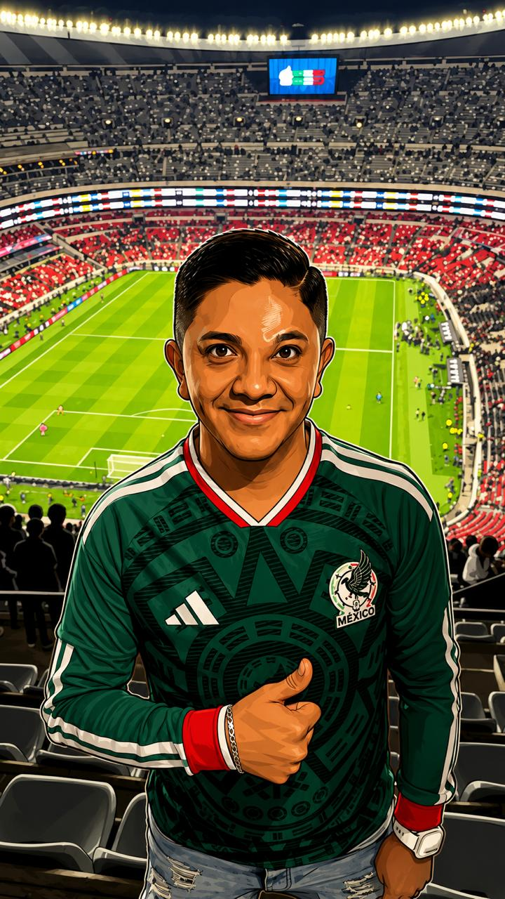

Mantenimiento tecnológico
Diagnóstico y mantenimiento preventivo y correctivo.
Equipo de cómputo
Multifuncionales
Dispositivos portátiles
Soy ingeniero en tecnologías computacionales, con experiencia en soporte de sistemas. Me gusta trabajar en equipo para crear soluciones eficientes y busco seguir creciendo en proyectos tecnológicos desafiantes.


Soy profesional en el área de Tecnologías de la Información y Comunicación. Me dedico a diseñar, desarrollar y optimizar soluciones tecnológicas que simplifiquen procesos, mejoren la seguridad de la información y faciliten el día a día de las personas y las empresas.
Mi objetivo principal es hacer que la tecnología trabaje a favor de nuestros objetivos, transformando retos complejos en herramientas sencillas y funcionales. ¡Quedo a su disposición para cualquier duda o colaboración!
Diagnóstico y mantenimiento preventivo y correctivo.
Creación de sitios web según las necesidades del usuario con herramientas modernas y de última generación.
Diseño de cursos, capacitación y acompañamiento docente para fortalecer competencias digitales y tecnológicas.
Una selección de lecturas para conectar la tecnología con temas actuales de educación, salud e inteligencia artificial.
Estos son algunos comentarios.

“Superó completamente nuestras expectativas, la página es muy intuitiva y fácil de navegar.”
Gerardo Lopez

“Detectaron fallas que otros técnicos no habían visto, y los equipos quedaron funcionando como nuevos”
Rodrigo Calderon

“El material didáctico y las presentaciones fueron impecables. El instructor domina el tema al 100% y sabe cómo explicarlo fácil.”
Alan Berinstain
Contáctame para crear tu sitio web, diagnostico y/o mantenimiento a tus equipos tecnológicos; así como para asesoría en la impartición de cursos.